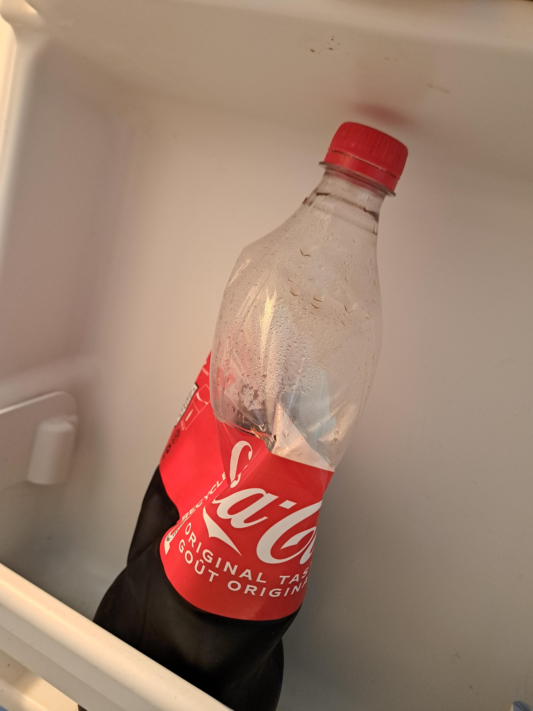
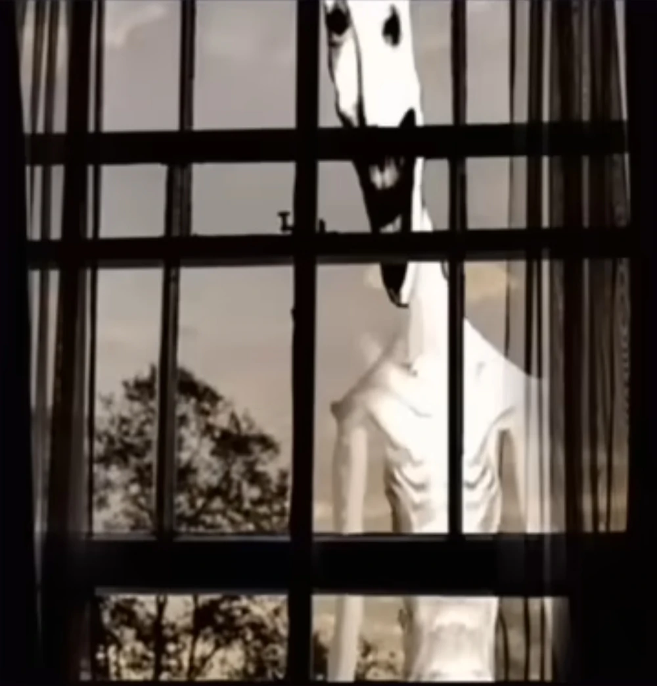

04/03/2017
Entrada 1
Primera entrada!!
Hoy nos enseñaron a hacer un vlog en el colegio.
bueno, no sé si esto cuenta como un vlog todavía porque no sé muy bien qué se supone que tengo que escribir aquí, pero la profesora dijo que podíamos hacer uno
y que era una buena forma de guardar cosas que nos pasaran durante el año así que supongo que voy a intentarlo
nunca había pensado en escribir cosas para que otras personas las leyeran... Me da un poco de vergüenza ʕ•́ᴥ•̀ʔ la verdad siento que cuando escribo para mí puedo poner cualquier cosa porque nadie tiene que verla,
pero esto es diferente supongo???
aunque probablemente nadie lo lea... así que no importa mucho... wwww
tengo 14 años y estoy en segundo año yyy no sé qué más poner para una primera entrada...
hoy no pasó nada especialmente interesante, tuvimos clases normales y después estuve un rato con mis amigas hablando de unos muchachos de tercer año wwwww
La profesora dijo que intentáramos actualizar esto seguido, así que voy a tratar de hacerlo.
quizás pueda escribir sobre las cosas que me gustan oooo del colegio... o de lo que sea no sé ʕ•́ᴥ•̀ʔʕ•́ᴥ•̀ʔʕ•́ᴥ•̀ʔ
yo personalmente creo que iré descubriendo con el tiempo de que hablar jiji
me gusta muchisimo la idea de volver despues de años y bum... leer lo que tenia cuando era chiquita :DDD seria super bonito no?
yo creo que voy a dejar de escribir por ahora...
HOLA YO DEL FUTURO ʕ•́ᴥ•̀ʔ
espero estes muy bien
04/08/2017
Entrada 2
Creo que ya pasó suficiente tiempo como para escribir otra cosa aquí, no??
aunque dije que iba a hacerlo seguido y solamente han pasado unos días esta semana fue bastante normal, aunque supongo que ya me acostumbré un poquito a esto de escribir aquí.
el principio me daba mucha pena porque sentía que alguien podía estar leyendo todo lo que ponía peeeeero después pensé que probablemente nadie está mirando una página hecha por una niña random de catorce años así que no importa mucho ʕ•́ᴥ•̀ʔʕ•́ᴥ•̀ʔ
en el colegio tampoco pasó nada demasiado interesante... tuvimos las clases de siempre yyy un montón de tareas lamentablemente... esta semana nos hicieron hacer otro ejercicio para aprender a hacer videos y creo que ahora entiendo un poco mejor cómo funciona
mis amigas se rieron de mí porque sigo sin saber qué decir cuando tengo una cámara enfrente pero creo que a ellas tampoco les saldría mucho mejor wwwww Rika incluso se puso a hablar de galletas o algo asi cuando el tema era el cole wwww
mi abuelite me llamó ayer para preguntarme cómo me estaba yendo y me dijo que debería escribir más sobre las cosas que pasan durante el día en vez de intentar que todo parezca salido de una peli y creo que tiene razón
a veces pienso demasiado las cosas antes de decirlas y me bloqueooo(╥﹏╥) así que supongo que esto es todo por esta semana yyy No pasó nada especial pero me gustó escribirlo de todas formas
quizás en el futuro veré esto y dire wooow esto era tan bonito y no supe apreciarlo wwwww
04/13/2017
Cosas que me gustan ʕ•́ᴥ•̀ʔʕ•́ᴥ•̀ʔʕ•́ᴥ•̀ʔ
La profesora nos pidió que la siguiente entrada fuera sobre cosas que nos gustan así que supongo que esta vez sí tengo una idea de qué escribir
me gustan muchas cosas aaaaaaunque cuando intento hacer una lista siempre termino olvidándome de la mitad... aver
me gusta escuchar música mientras hago tareas pero mi mamá siempre dice que así no me puedo concentrar o que estoy haciendo mucho ruido (╥﹏╥)
también me gusta caminar cuando hace frío y especialmente cuando está nublado y no hay tanta gente afuera... aunque debo admitir que es medio raro wwwww
me gusta mucho la coca cola y a mi abuelita también, así que cuando visita le compro una para que no haga de ese té que no me gusta ni un poquito

esta fue una botella que estaba tomando y sin querer me voltee y le pegue un codazo... soy bastante fuerte la verdad ❁◕ ‿ ◕❁
no me gusta mucho leer pero si las pelis, sobretodo las de terror y que se pueden ver muuuuchas veces sin aburrirte como Reincarnation
me gusta muchisisisimo aprender cosas que no sabia antes y resulta que soy buena, tipo, lo daría todo por aprender mis superpoderes si tuviera...
bueno... yo creo que esto es una listita de cosas que me gustan, si se me ocurre algo lo actualizaré en otra entrada
ah y los gatos, tengo uno preciosisimo, creo que la raza se dice ragdoll
04/17/2017
Hoy pasó algo raro...
No sé muy bien cómo explicarlo pero creo que vi a alguien en mi habitación o bueno... no a alguien exactamente, más bien... algo...
estaba sentada haciendo tareas y escuchando mi canción favorita cuando escuché como si alguien hubiera arrastrado una silla detrás de mí DD:
dije ah será mi mamá o algo que se cayó bien fuerte, así que me giré y había una especie de sombra parada junto a la puerta... no se veía muy bien que era
pero me quedé mirandolo como 10 segundos y bam, va y desaparece... ME QUERÍA MORIR... o bueno no me dio mucho miedo hasta que me quedé pensando un rato
despues juré escuchar algo al fondo de la casa que gemía el nombre de mi mamá como si le doliese algo, me asuste y salí a la sala... no vi nada DDDD:
supongo que estoy demasiado cansada??? tal vez mamá tiene razón y es el computador, pero descubri un juego flash lo más de divertido y no puedo dejar de jugar
voy a dormir con la puerta cerrada hoy, ah, y grabando un video para una tarea se escucha como una especie de respiracion??
yo creo que estoy volviendome loca por el cansancio por culpa de los los examenes de matematicas...
07/10/2017
Volví ʕ•́ᴥ•̀ʔ
creo que llevo como dos meses sin escribir nada aquí wwwwww y supongo que debería explicar por qué desaparecí de repente...
primero que nada no me robaron ni me pasó nada malo asi que no se preocupen... aunque supongo que nadie lee esto igual
porque esto era una tarea del colegio y literalmente nos enseñaron a hacer vlogs de texto para practicar escribir cosas de nuestra vida (╥﹏╥)
bueno, resulta que todo lo que escribí la última vez sobre esa cosa que vi era verdad y MUUUY VERDAD
me llevaron a un lugar donde me explicaron que existen unas cosas llamadas maldiciones y que algunas personas pueden verlas y pelear contra ellas...
aparentemente yo soy una de esas personas lo que significa... QUE SOY UNA SUPERHEROINA (≧◡≦)
todavía me da muchísima risa escribirlo porque parece algo que pondría en una historia de fantasía o algo asi wwwww pero resulta que nací con la capacidad
de verlas y también puedo usar algo llamado """energía maldita""" O ALGO ASI para pelear con ellas, se ve como fuego pero azulito y transparente
por eso me quitaron el celular durante estos dos meses, no fue porque me estuviera portando mal ni nada asi, simplemente dijeron que primero tenía que aprender lo básico antes de volver a mi vida normal
al principio no entendía absolutamente nada y me cansaba por hacer las cosas más tontas, pero poco a poco aprendí a usar la energía para reforzar mi cuerpo y después a pelear un poquito mejor
también es raro pensar que mientras yo estaba haciendo tareas y viendo películas había personas que literalmente se dedicaban a pelear contra monstruos y que yo podía hacer lo mismo sin saberlo...
me dijeron que todavía soy principiante y que lo que aprendí estos dos meses es apenas lo básico pero me hace ilusión seguir aprendiendo ❁◕ ‿ ◕❁
voy a intentar volver a hacer entradas de vez en cuando, aunque sigo sabiendo que probablemente nadie va a leer esto... igual me gusta mucho escribir :DDDDD
12/13/2017
Foto de una maldicion en mi primera misión

A esta la matamos rapidisimo, le metí algo que mi profe llamaba como... black splash wwwww no sé
12/13/2017
Cuanto tiempooooo
no puedo creer que haya pasado tanto tiempo desde la última vez que escribí aquí wwww
creo que la última entrada fue hace meses y después simplemente desaparecí... pido perdon es solo que... WOW
no fue porque me olvidara de esto, bueno... un poquito si, pero también he estado haciendo muchas misiones y casi no he tenido tiempo para sentarme a escribir nadaaa
resulta que cuando eres hechicera no es como en las peliculas donde tienes una aventura enorme una vez y después vuelves tranquilamente a tu casa jajaja, hay misiones todo el tiempo y algunas duran bastante
he estado viajando muchísimo y conociendo lugares que probablemente nunca habría visitado de otra forma, aunque casi siempre es porque hay alguna maldición que alguien tiene que exorcizar así que no es precisamente turismo wwwwww
y bueno, también pasó algo bastante importante...